Mosaics
SYDE 671 · Assignment 3 · James Xie
A.3 / WARPING
& RECTIFICATION
Inverse-map the output grid. Sample the source by hand. Compare two ways to reconstruct the image.
01 / Every output pixel finds its source.
For each output pixel (x, y), apply H⁻¹ and divide by the homogeneous coordinate to find source position (s, t). Inverse mapping avoids gaps from forward scattering.
Nearest neighbor
Sample floor(s + 0.5), floor(t + 0.5), rounding half ties upward. Values stay discrete, but diagonal edges can look stepped.
Bilinear
Let i = floor(s), j = floor(t), α = s − i, and β = t − j. Blend the four neighboring source samples using their two-dimensional distance weights.
Both samplers are handwritten in NumPy. Linear algebra handles H; Pillow handles image I/O and figures. No high-level warp or interpolation API is used.
02 / Bounds, origins & transparent pixels.
Integer coordinates denote pixel centers. Bounds come from the four transformed corners, using floor/ceil and inclusive endpoints. The origin preserves negative coordinates; row blocks limit memory.
Automatic bounds reject a projective horizon crossing the source. A finite destination ROI can still be sampled. Outputs above 40 million pixels are rejected before allocation.
Both masks use 0 ≤ s ≤ width−1 and 0 ≤ t ≤ height−1. Invalid samples are transparent. Bilinear sampling clamps neighbors at exact borders. Valid black pixels stay opaque.
The functions return a WarpResult containing image (float32), alpha (boolean), origin and H_source_to_canvas. Saved PNGs round RGB values to uint8 and retain an explicit alpha channel.
03 / Two real rectangular windows.
Two windows are rectified by mapping their four frame corners to axis-aligned rectangles with the A.2 solver. Only the selected plane is straightened.
R1 · RECTIFICATION
R1 / Front facade horizontal window
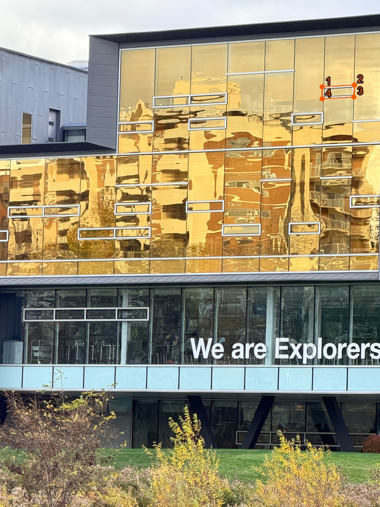

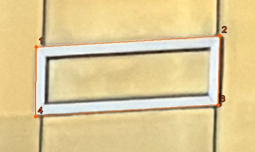
The chosen rectangle uses twice the mean visible opposite-edge lengths, not a measured physical aspect ratio. The output includes 32 pixels of context.
Selected source points and target rectangle
| Corner | Source pixel center | Target pixel center |
|---|---|---|
| 1 | 3634, 979 | 0, 0 |
| 2 | 3995, 957 | 721, 0 |
| 3 | 3992, 1093 | 721, 273 |
| 4 | 3633, 1116 | 0, 273 |
Four-corner algebraic fit residual: at most 1.2e-12 target pixels. This checks the supplied corner mapping, not independent accuracy or physical calibration.
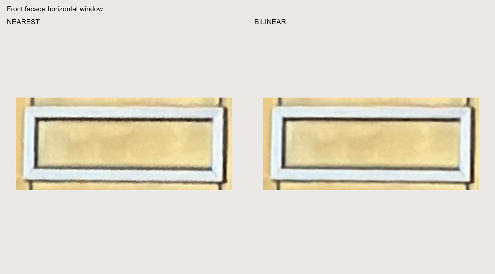
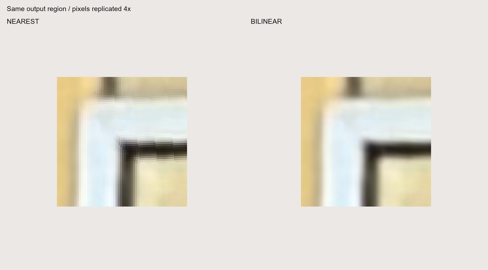
Nearest full-resolution RGBA PNG · Nearest validity mask · Bilinear full-resolution RGBA PNG · Bilinear validity mask


Recovered H and canvas metadata
1.75011557 0.0127745662 -6372.42628 0.106695525 1.75077657 -2101.7418 -2.23679992e-05 -3.63199364e-05 1
World origin: (-32, -32); output array: 786 × 338. Subtract the origin for canvas indices. Full transforms, masks and timing data are linked.
R2 · RECTIFICATION
R2 / Side facade tall window


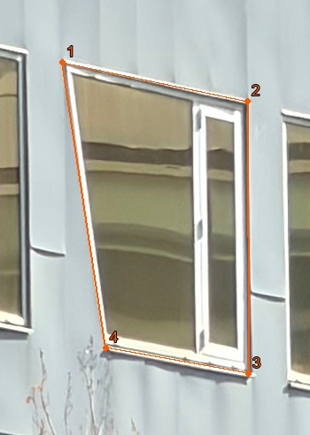
The chosen rectangle uses twice the mean visible opposite-edge lengths, not a measured physical aspect ratio. The output includes 32 pixels of context.
Selected source points and target rectangle
| Corner | Source pixel center | Target pixel center |
|---|---|---|
| 1 | 1041, 984 | 0, 0 |
| 2 | 1250, 1028 | 377, 0 |
| 3 | 1251, 1336 | 377, 635 |
| 4 | 1090, 1307 | 0, 635 |
Four-corner algebraic fit residual: at most 7.7e-13 target pixels. This checks the supplied corner mapping, not independent accuracy or physical calibration.
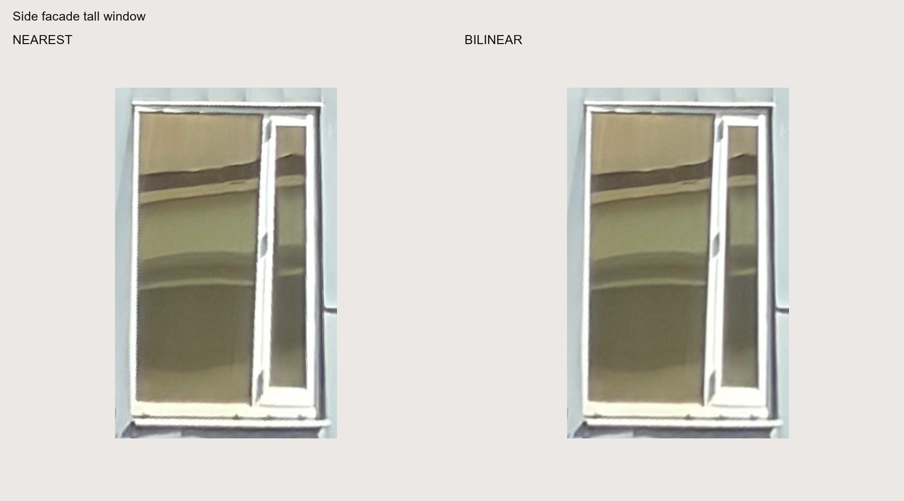
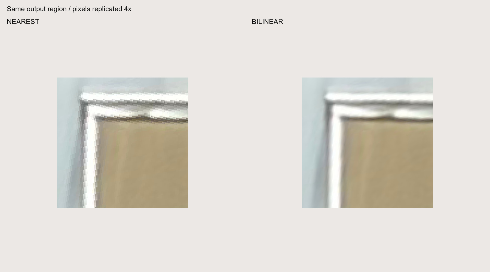
Nearest full-resolution RGBA PNG · Nearest validity mask · Bilinear full-resolution RGBA PNG · Bilinear validity mask


Recovered H and canvas metadata
1.10597071 -0.167778838 -986.221129 -0.199536386 0.947797832 -724.91569 3.30875999e-05 -0.000435619427 1
World origin: (-32, -32); output array: 442 × 700. Subtract the origin for canvas indices. Full transforms, masks and timing data are linked.
P1 · PROJECTION
P1 / IMG_8447.jpg into IMG_8448.jpg coordinates


A.2 H warps the full source; four transformed corners define its canvas. The reference is shown for context, not blended here. The A.2 excluded-check RMSE was 0.838 target pixels, measured on local architectural points.
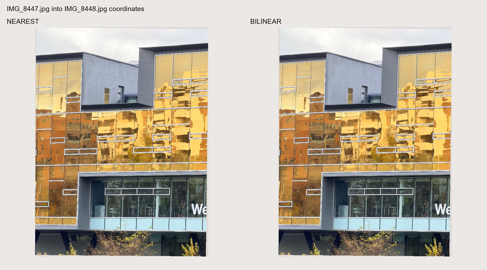
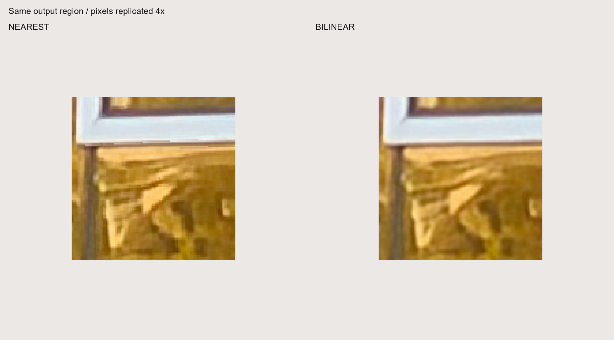
Nearest full-resolution RGBA PNG · Nearest validity mask · Bilinear full-resolution RGBA PNG · Bilinear validity mask


Recovered H and canvas metadata
1.24359535 -0.00905993169 -1236.09007 0.0169915939 1.24261297 -53.7931094 1.15357493e-06 1.6632655e-06 1
World origin: (-1265, -54); output array: 3781 × 5012. Subtract the origin for canvas indices. Full transforms, masks and timing data are linked.
P2 · PROJECTION
P2 / IMG_8451.jpg into IMG_8452.jpg coordinates
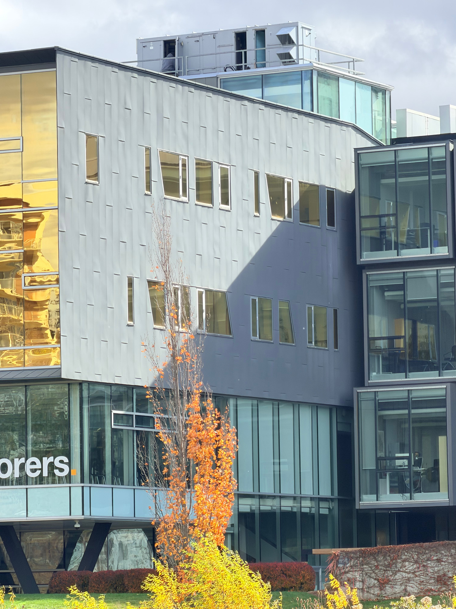

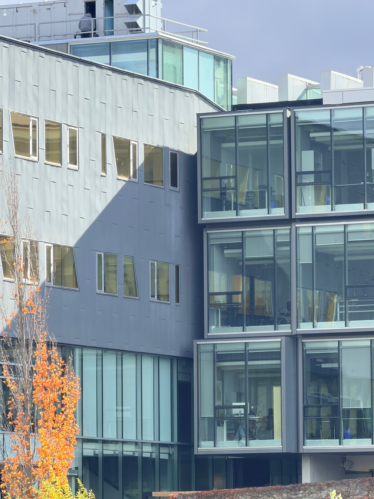
A.2 H warps the full source; four transformed corners define its canvas. The reference is shown for context, not blended here. The A.2 excluded-check RMSE was 1.924 target pixels, measured on local architectural points.
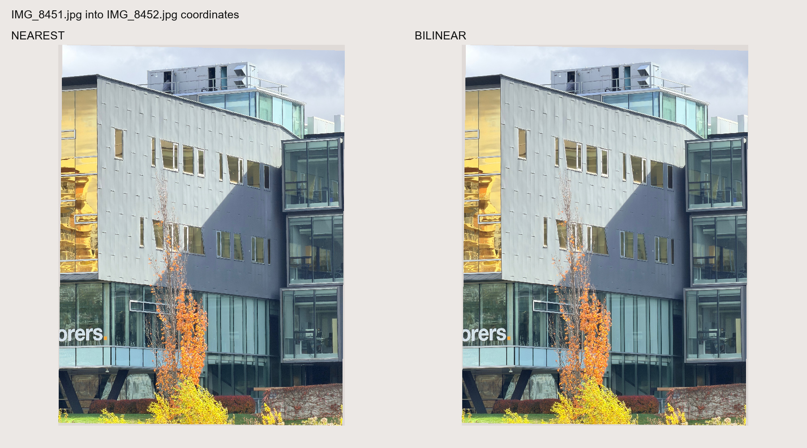
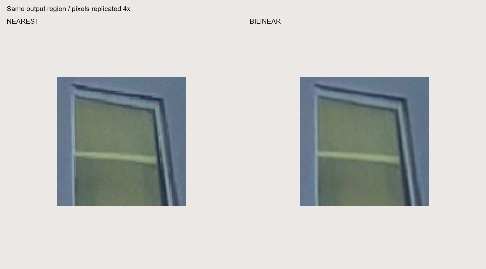
Nearest full-resolution RGBA PNG · Nearest validity mask · Bilinear full-resolution RGBA PNG · Bilinear validity mask


Recovered H and canvas metadata
1.16486172 -0.0107823669 -1132.07446 0.0227679784 1.15796987 -272.051745 2.69622464e-06 -1.36036133e-06 1
World origin: (-1183, -273); output array: 3554 × 4727. Subtract the origin for canvas indices. Full transforms, masks and timing data are linked.
04 / Speed versus sample quality.
Each row compares identical inputs, H, ROI, masks and block size. After warm-up, report the median of three runs. Timing includes validation, allocation and sampling, but excludes I/O and figures.
| Case | ROI pixels | Nearest (ms) | Bilinear (ms) | Time ratio |
|---|---|---|---|---|
| R1 | 173,056 | 40.75 | 67.73 | 1.66× |
| R2 | 226,304 | 26.23 | 59.25 | 2.26× |
| P1 | 262,144 | 28.55 | 63.78 | 2.23× |
| P2 | 262,144 | 28.03 | 68.50 | 2.44× |
The ROI is centered in the full output and bounded to 512 × 512 pixels. R1 and R2 are the front and side windows; P1 and P2 are the front and side adjacent-view projections. Compare methods within each row; image sizes differ. Timings reflect this machine and three runs.
Here bilinear takes 1.66–2.44× the nearest-neighbor time. Four weighted samples give smoother edges but can soften detail. Neither method properly filters strong minification.
The saved mean absolute output difference measures sample disagreement, not reconstruction accuracy; no aligned ground truth is available.
05 / What the examples establish.
The examples verify rectification, full-image bounds and transparent support. Different depths, reflections and vegetation may still disagree. A.4 shows the blended panorama.
Sampling uses stored RGB values, without radiance linearization. Overviews use nearest display scaling; details use equal integer pixel replication. Full RGBA outputs are linked.
Reproduce & inspect.
python run_experiments.py python build_report.py python -m unittest test_warp -v
Handwritten inverse warp and both samplers · Selected corners and target rectangles · All matrices, bounds and timing samples · Experiment source · Unit tests · A.2 homography report
Checks cover known samples and transforms, valid black pixels, borders, masks, bounds and invalid inputs. Real-photo outputs and input hashes were independently verified.
Python 3.14.3 · NumPy 2.4.2 · Pillow 12.1.0. No new dependency was installed.